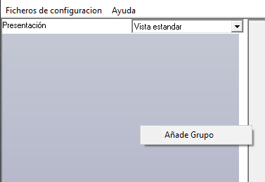
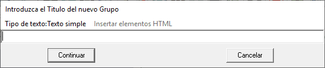
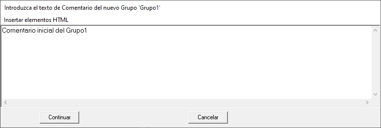
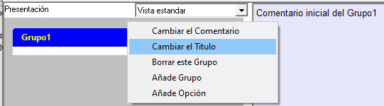

Se puede añadir un Grupo de varias formas:
- Mediante el menú "Añade Grupo".
- A través del "Editor combinado de Grupos y Opciones".
- En el proceso de incluir un fichero por el procedimiento de "arrastrar y soltar" cuando no se hace sobre un Grupo ya creado.
Creación de un Grupo mediante el menú "Añade Grupo"
El menú "Añade Grupo" aparece cuando pulsamos el botón derecho del ratón cuando éste está en el panel de la izquierda fuera de cualquier Grupo ya definido.

Pulse en el menú y le aparecerá el siguiente formulario donde deberá introducir el nombre del Grupo y "Continuar". Puede abortar la creación del Grupo en ese momento pulsando "Cancelar". Si quiere borrar un grupo, lo puede hacer posteriormente, con el menú que se describe más adelante.

Si pulsa "Continuar", el programa le presentará el siguiente formulario, donde puede introducir el comentario de este Grupo. Este comentario también se puede cambiar más adelante.

Edición de un Grupo mediante opciones del menú de Grupo
Si se pulsa el botón derecho del ratón cuando está sobre un Grupo, aparecerá el siguiente menú:

Las tres primeras opciones permiten cambiar el "Comentario" asociado (ver "Edición del Comentario"), cambiar su "Título" o borrarlo. En las dos primeras opciones se presentan los formularios descritos más arriba.
Eliminar un Grupo
Basta con usar la opción "Borrar este Grupo" en la figura anterior.